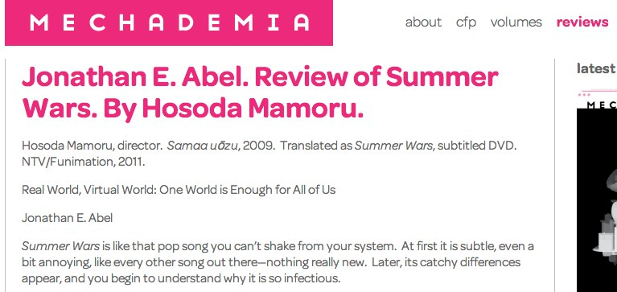

Summer Wars is like that pop song you can’t shake from your system. At first it is subtle, even a bit annoying, like every other song out there—nothing really new. Later, its catchy differences appear, and you begin to understand why it is so infectious.
The hackneyed main idea of the film is that culture matters. We are presented with an all too familiar two-world division between our world and a virtual one. Our real world is contrasted with the virtual online world of OZ (the bastard child of an orgy between Facebook, Second Life, and Paypal) where in the flashy opening sequence a suitably disembodied feminine robotic voice tells us “you can customize your avatar,” “inside the shopping mall you can find music, movies, furniture, food, cars, real estate, vacation plans, and more,” and “OZ supports simultaneous translation for every language.” OZ is visually stunning, combining a superflat style with dynamic Second Life-inspired camera movements through its virtual space. This contrasts very clearly with the more standard portrayal of the real world in a traditional or at least Ghibhli-esque anime style. The hard line between the two visual styles and the disembodied voice’s reassurances that “all of your personal information will be safely protected” establish the two-world divide in the opening minutes of the film. But as with all good two-worlds fiction, the fun comes when, in George Costanza’s parlance, “worlds collide.” No matter how many assurances to the contrary, what happens in OZ will not stay there!
(Continue Reading Online at MECHADEMIA)
Real World, Virtual World: One World is Enough for All of Us
12/1/11
My best attempt to capture the style of Spy magazine circa 1989.
Film Review
2011